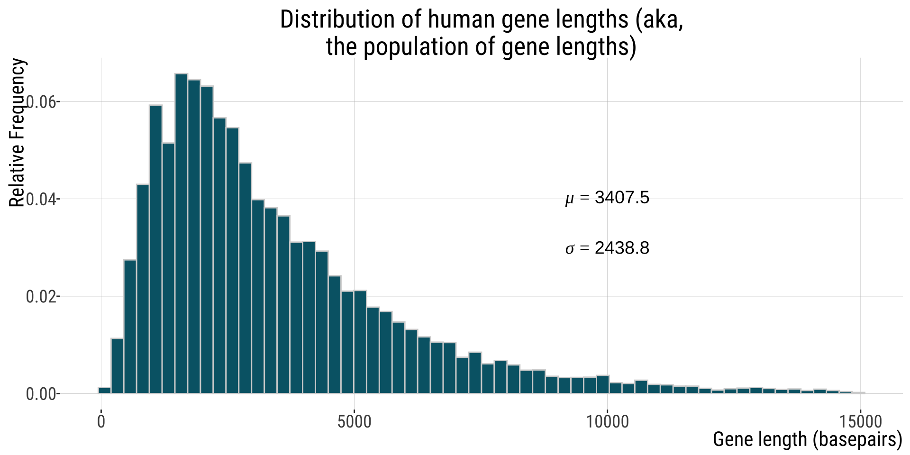
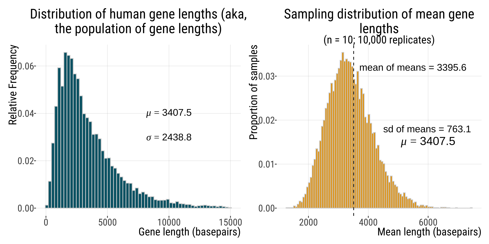
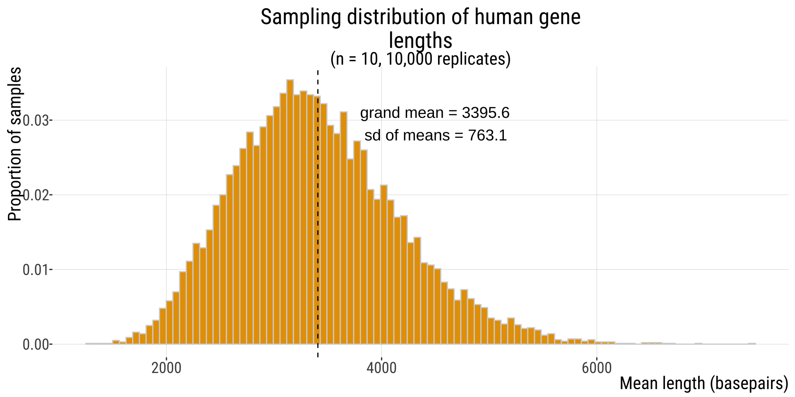
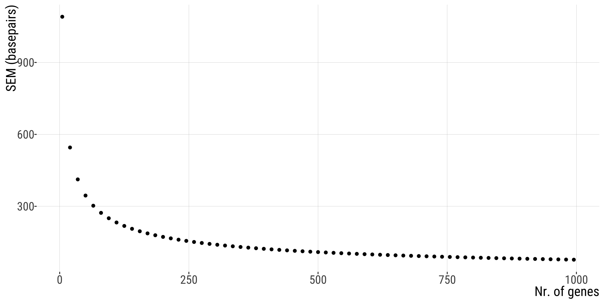

hg_mean<-mean(human_genes$size)
hg_sd<-sd(human_genes$size)
human.hist <- ggplot(human_genes, aes(x = size)) +
geom_histogram(
aes(y = after_stat(count / sum(count))),
bins = 60, color = "lightgray", fill = "#006475") +
xlab("Gene length (basepairs)") +
ylab("Relative Frequency") +
ggtitle(stringr::str_wrap("Distribution of human gene lengths (aka, the population of gene lengths)", width = 40)) + #this wraps the title text so that is doesn't exceed 40 characters
annotate("text",
x = 10000, y = 0.04,
label = "mu==3511.5", parse = TRUE, size = 8
) +
annotate("text",
x = 10000, y = 0.03,
label = "sigma==2833.3", parse = TRUE, size = 8
)
human.hist4.2.Estimating with uncertainty
Standard Error
October 17, 2026
Key Learning Objectives
- Understand that because estimates take values by chance, they will differ from true population parameters.
- Connect the spread of the sampling distribution to uncertainty in estimates.
- Recognize the standard error as the standard deviation of the sampling distribution.
- Understand the confidence interval as a plausible range of a parameter, given an estimate and uncertainty in it.
In the face of chance (randomness of my sample),
can I trust my estimate?
And how much can I trust it?
Two key measures of precision of an estimate
Standard Error
Confidence Intervals
The Standard Error: Definition
The standard error reflects the difference between an estimate and the target parameter value.
The standard error predicts the sampling error of the estimate.
The standard error of an estimate is the standard deviation of its sampling distribution.
We could in principle calculate SE for any summary statistic but we will focus on the most common – the standard error of the mean.
The Standard Error of the Mean (SEM)
The SEM quantifies how precisely you know the population mean.
Exact value: Because we rarely know the population standard deviation,\(\sigma\), we cannot find the parameter \(\sigma_{\bar{x}}=\frac{\sigma}{\sqrt{n}}\) , the standard error of the population mean.
But, we can use the sample standard deviation, \(s\), to estimate \(SEM_{\bar{x}}=\frac{s}{\sqrt{n}}\), the standard error of the sample mean.
We can also estimate \(SEM_{\bar{x}}\) by taking the standard deviaton of the sampling distribution of sample means of a given size.
Example: human gene lengths
See “sampling distribution demo” (Lab 6).
Human gene lengths
This distribution is heavily skewed
Human gene lengths

Slight modification
Slight modification
99%
13699.6 # we will filter them out for this demo
human_genes_filt<-human_genes |> filter(size <=15000)
hg_filt_mean<-mean(human_genes_filt$size)
hg_filt_sd<-sd(human_genes_filt$size)
human.hist2 <- ggplot(human_genes_filt, aes(x = size)) +
geom_histogram(
aes(y = after_stat(count / sum(count))),
bins = 60, color = "lightgray", fill = "#006475") +
xlab("Gene length (basepairs)") +
ylab("Relative Frequency") +
ggtitle(stringr::str_wrap("Distribution of human gene lengths (aka, the population of gene lengths)", width = 40)) + #this wraps the title text so that is doesn't exceed 40 characters
annotate("text",
x = 10000, y = 0.04,
label = paste0("mu==", round(hg_filt_mean,1)), parse = TRUE, size = 5
) +
annotate("text",
x = 10000, y = 0.03,
label = paste0("sigma==", round(hg_filt_sd,1)), parse = TRUE, size = 5
)
human.hist2
A random sample of ten genes
Summarising my sample
Summarising my sample of \(n=10\):
Summarising my other sample
Summarising my other sample of \(n=10\):
Now let’s do this many times
Many samples of 10 genes
| replicate | mean_length | sd_length |
|---|---|---|
| 1 | 2995.3 | 1974.538 |
| 2 | 3225.3 | 2014.987 |
| 3 | 4171.6 | 2366.743 |
| 4 | 5036.1 | 3366.969 |
| 5 | 4193.3 | 2821.117 |
| 6 | 2914.0 | 1677.142 |
Summarise
mean_of_means sd_of_means SEM
3395.6 2292.6 763.1 Plotting the Sampling Distribution
Notice how close the “mean of means” is to the population mean!
genes.sum.plot <- ggplot(samp.dist, aes(x = mean_length)) + geom_histogram(aes(y = after_stat(count)/sum(count)),
bins = 100, color = "lightgray", fill = "#E69F00") + ggtitle(stringr::str_wrap("Sampling distribution of mean gene lengths",
width = 40), subtitle = "(n = 10; 10,000 replicates)") +
xlab(label = "Mean length (basepairs)") + ylab("Proportion of samples") +
annotate(geom = "text", x = 3700, y = 0.032, label = sprintf("mean of means = %s",
round(genes.sum[1], 1)), size = 5, hjust = 0) + annotate("text",
x = 6000, y = 0.015, label = paste0("mu==", round(hg_filt_mean,
1)), parse = TRUE, size = 6) + geom_vline(xintercept = mean(human_genes$size),
color = "black", lty = 2)
genes.sum.plotSummarise

Compare the pop & the sample dist
Mean parameter estimates of a sampling distribution should equal population parameters.

Mean parameter estimates of a sampling distribution should equal population parameters.
Compare the pop & the sample dist

- The width (standard deviation) of a population (\(\sigma=\) 2438.804101) exceeds that of its sampling distribution (\(s_{\text{all means}}=\) 2292.6.
The Standard Error & The Sampling Distribution
The standard error is the standard deviation of the sampling distribution
The standard deviation of this distribution is
genes.sum[['sd_of_means']]basepairsSo
genes.sum[['sd_of_means']]is our estimate for the standard error of the mean based on our sampling distribution

The Standard Error & The Sampling Distribution

You might be thinking, but how would I get such a sampling distribution?
It turns out there is a clever way of resampling from your own sample to estimate an (unknown) sampling distribution!
Bootstrapping!
use the observed sample to estimate the population distribution.
then samples can be drawn from the estimated population and the sampling distribution of any type of estimator can itself be estimated.

Uncertainty
Because we rarely know the population sd \((\sigma)\), we cannot find the parameter \(\sigma_{\bar{Y}}= \sigma_Y / \sqrt{n}\) .
But, we can use the sample standard deviation (\(s\)) to estimate the standard error \(SEM_{\bar{Y}}= s / \sqrt{n}\)
Compare
The sampling distribution estimate of $SEM_{{Y}}=$763.1
and
the parameter Standard Error of the population mean
\(\sigma_{\bar{Y}}=\frac{\sigma_{Y}}{\sqrt{n}}\)
\(=\frac{2438.804}{\sqrt{10}}=771.2175\approx 771.2\)
These are indeed very similar! \(SEM_{\bar{Y}}\) is an estimate of \(\sigma_{\bar{Y}}\) and is itself estimated with error.
Sample size, uncertainty, and the standard error
SE Decreases with Sample Size
The standard error goes down as a sample size goes up.
Using the example from before:
\(\sigma_{\bar{Y}}=\frac{\sigma_{Y}}{\sqrt{n}}\)
if \(n=10\)
\(\sigma_{\bar{Y}}=\frac{2438.804}{\sqrt{10}}\approx771.2\)
if \(n=100\)
\(\sigma_{\bar{Y}}=\frac{2438.804}{\sqrt{100}}\approx243.9\)
Small Samples, Large Uncertainty
Uncertainty increases as sample size decreases.
Therefore, extreme values are often associated with small sample size.
Treat simple summary statistics with skepticism.
Be sure to consider uncertainty before being misled by exceptional values.
SE Decreases with Sample Size

How we report SEM
\(\bar{X}\pm SE\)
In our previous example, our first sample had \(\bar{X}=2533.9\) and \(s_{X}=1517.998\), so \(SEM_{\bar{X}}=\frac{1517.998}{\sqrt{20}}\approx339.4\)
So we would report \(2533.9 \pm339.4 \text{ (SEM)}\). Later we will also see how the \(SEM\) is used in plots (error bars).
Standard error - Summary
- Estimates with smaller standard errors are more precise
- The smaller the sampling error, the less uncertainty (due to random sampling) there is about the target parameter in the population (“out there”).
- You can calculate the standard error for any estimate, not just the mean.
- The SE of the sample mean if sometimes referred to as SE, but this is ambiguous - use SEM instead of SE
- For huge sample sizes, the SEM is always tiny, even if the data have considerable spread (SD).
- Small samples underestimate the SD of the population
- Both SD and SEM are expressed in the same unit as the data